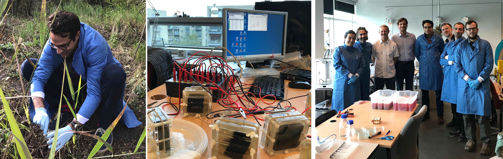
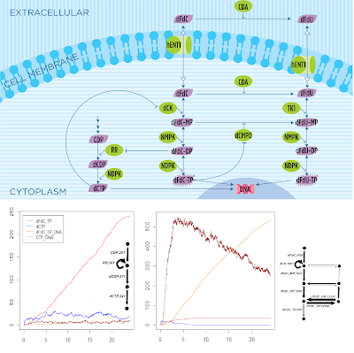
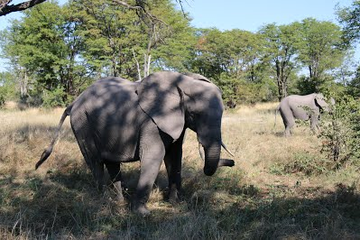
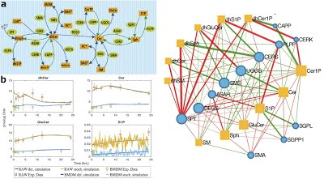
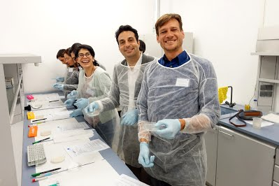
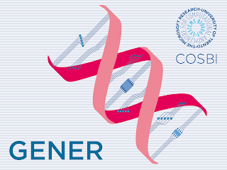

June 2020
-
My proposal “Understanding Coral Colony Morphology via Stochastic Modelling” (UNICOMS)
has been accepted for the 7th call of the
ASSEMBLE Plus Transnational Access program.
-
James Lynch and I are
editing a special issue on
Computational Methods in Synthetic Biology at the MDPI Biology journal. Submissions are welcome!
Please email us for any inquiries.
-
I talked about
modelling life at the
TiramiScience channel.
January 2020
-
I presented an abstract
on our model of growth and branching in mediterranean red coral colonies
at the DSABNS conference.
-
Elena presented her preliminary results on
Signal fidelity in Escherichia coli phosphate response with synthetic promoters
at the DSABNS conference.
December 2019
-
I presented a model of growth and branching in mediterranean red coral colonies
at the TPNC conference.
Stochastic Mechanisms of Growth and Branching in Mediterranean Coral Colonies
O. Kahramanoğulları, L. Bramanti, M. C. Benedetti
Proceedings of 8th International Conference on the Theory and Practice of Natural Computing
TPNC 2019, Kingston, Canada, December 9-11, LNCS, Springer, 2019.
Here is a video of the colony growth generated by a stochastic simulation with the model.
October 2019
-
The paper of my invited talk at NUMTA
is now in press. The slides of the talk are
here.
Stochastic Mechanisms of Information Flow in Phosphate Economy of Escherichia Coli
O. Kahramanoğulları, C. Uluseker, M. M. Hancyzc
Proceedings of 3rd International Conference on Numerical Computations: Theory and Applications,
NUMTA 2019, Le Castella, Italy, June 15-21, LNCS, Springer, 2019.
Here is a video that displays the dynamic evolution of the
fluxes after a sudden change in external phosphate concentration at 7000
secs into the simulation.
September 2019
-
Our paper on growth and branching in mediterranean red coral colonies
is accepted at the TPNC conference.
Stochastic Mechanisms of Growth and Branching in Mediterranean Coral Colonies
O. Kahramanoğulları, L. Bramanti, M. C. Benedetti
Proceedings of 8th International Conference on the Theory and Practice of Natural Computing
TPNC 2019, Kingston, Canada, December 9-11, LNCS, Springer, 2019.
July 2019
-
We are finalizing the
Living Architecture
project with the final review. Check out the below video.
Here is the PDF brochure as well.
-
I gave a talk about E. coli phosphate economy
at the Italian Regional Conference on Complex Systems
CCS/italy.
June 2019
-
I gave a talk about "deep inference for proof search" at the
Structures and Deduction Workshop.
-
I gave an invited talk at NUMTA
on the stochastic analysis of our model that quantifies the phosphate economy of E. coli.
Here are the slides.
May 2019
-
Here
are some ideas that put together static considerations of biological networks with stochastic dynamic ones.
Enumerating Dominant Pathways in Biological Networks by Information Flow Analysis.
Ozan Kahramanoğulları
Proceedings of 6th International Conference on Algorithms for Computational Biology
AlCoB 2019, Berkley, California, May 28-30, LNCS/LNBI, Springer, 2019.
April 2019
-
I gave a talk about this paper, "On Quantitative Comparison of Chemical Reaction Network Models" at the
PERR Workshop.
March 2019
-
I gave a talk about artificial intelligence at a high school: "Possiamo fare ragionare i computer?"
Here are the slides.
February 2019
-
The paper
with our results on phosphate economy is now published at the Scientific Reports Journal.
Quantifying dynamic mechanisms of auto-regulation in Escherichia coli with synthetic promoter in response to varying external phosphate levels.
C. Uluseker, J. Torres-Bacete, J. L. Garcia, M. M. Hancyzc, Juan Nogales, O. Kahramanoğulları
Scientific Reports, 2019.
[ Keywords: Systems Biology, Synthetic Biology, Modelling, E. coli, Phosphate intake ]
January 2019
-
I presented an
abstract on phosphate economy at the DSABNS 2019.
Here are the slides.
July 2018
-
Cansu's recent results are now published in the proceedings of
ALIFE 2018 in Tokyo.
[LINK]
Mechanisms of Switching Response to External Phosphate Levels in Escherichia coli.
C. Uluseker, M. M. Hanczyc and O. Kahramanoğulları
ALIFE 2018,Artificial Life Conference Proceedings, 23-27 July, 2018, Tokyo.
[ Keywords: Systems Biology, Synthetic Biology, Artificial Life, Modelling, E. coli ]
October 2017
-
We have built microbial fuel cells and droplet cells at the
IT University of Copenhagen,
Autumn School on DIY Liquid Handling Robots,
Microbial Fuel Cells, and Artificial Chemical Life.

September 2017
-
We had a workshop on modelling in Trento for H2020 LIAR - Living Architecture project.
September 2017
-
We presented the preliminary results of Cansu's PhD work at the ECAL'17 Conference.
[LINK]
A Dynamic Model of the Phosphate Response System with Synthetic Promoters in E. coli.
C. Uluseker, J. Torres, J. L. Garcia, M. M. Hanczyc, J. Nogales and O. Kahramanoğulları
ECAL 2017
Proc. of the International Conference on Artificial Life, 4-8 September, 2017, Lyon.
[ Keywords: Synthetic Biology, Artificial Life, Systems Biology, Modelling, E. coli ]
March 2017
-
This one should ease the applications of our
previous work with
James Lynch on stochastic simulation
fluxes by introducing a simple algorithm that extends
Gillespie's direct method.
[PDF]
[TALK-PDF]
Quantifying Information Flow in Chemical Reaction Networks.
Ozan Kahramanoğulları
Proceedings of 4th International Conference on Algorithms for Computational Biology
AlCoB 2017, Aveiro, Portugal, June 5-6, LNCS 10252, Springer, 2017.

[LINK]
Stochastic Flux Analysis of Chemical Reaction Networks,
Ozan Kahramanoğulları, James Lynch,
BMC Systems Biology, 7: 133, 2013.
Among 100 most viewed articles of 2014 at BMC Systems Biology.
March 2017
-
Back to the future: I could finally put together some new ideas on old thoughts.
[LINK]
[TALK-PDF]
Deep Proof Search in MELL.
Ozan Kahramanoğulları
Logic for Programming, Artificial Intelligence, and Reasoning,
21st International Conference, Maun Botswana, May 7-12, 2017.
Proceedings of LPAR 2017, EPiC Series in Computing, Volume 46.

January 2017
-
Federico's PhD work is now published at the Scientific Reports Journal.
[LINK]
Mechanistic interplay between ceramide and insulin resistance.
F. Reali, M. Morine, O. Kahramanoğulları, S. Raichur, H. Schneider, D. Crowther, C. Priami
Scientific Reports, 2017.
[ Keywords: Computational Biology, Systems Biology, Modelling, Ceramides, Insulin resistance ]

October 2017
-
With Cansu (left) and Martin (right),
we participated in our European project meeting in Venice
on Living Architecture (LIAR). And then again we met with
others in Madrid at the Spanish National Research Council (CSIC)
with a hands-on workshop on synthetic biology.

LIAR is a modular bioreactor-wall, which is based on
the operational principles of microbial fuel cell
technology and synthetic ‘consortia’ of microbes.
The project establishes:
-
Foundational concepts through which ‘designed’
metabolisms can computationally process, recycle,
remediate and synthesize valuable compounds from waste
water.
-
Transferable principles by which synthetic ecosystems
can shape the environmental performance of our living
spaces to increase our health, productivity and
ecosystems impact.
-
New standards for synthetic ‘ecosystems’ through
consortia design, engineering and optimization.
December 2016
-
Some ideas on merging modeling technologies at different biological levels on a single platform.
[PDF]
Simulating Stochastic Dynamic Interactions with Spatial Information and Flux.
Ozan Kahramanoğulları
Proceedings of 5th International Conference on the Theory and Practice of Natural Computing
TPNC 2016, Sendai, Japan December 12-13, LNCS 10071, Springer, 2016.
May 2015
-
[LINK]
Gener: A minimal programming module for chemical controllers based on DNA strand displacement.
Ozan Kahramanoğulları, Luca Cardelli
Bioinformatics, 2015.

Gener is a tool for performing reductions on DNA strands wrt. a strand displacement algebra.
- Process Modeling and Rendering of Biochemical Structures: Actin.
Ozan Kahramanoğulları, Andrew Phillips, Federico Vaggi
Biomechanics of cells and tissues: experiments, models and simulations
Springer, Lecture Notes in Computational Vision and Biomechanics, Volume 9, 2013.